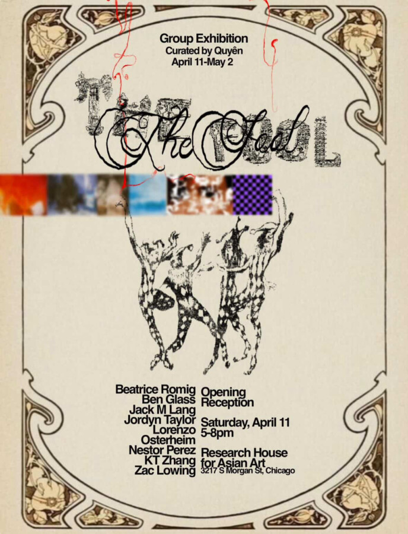

The Fool
The Fool is a show built around a morally gray character, one who exists in the space between instinct and intention, innocence and awareness. Drawing inspiration from tarot symbolism and the aesthetic language of the Renaissance, the concept embraces a timeless duality: the balance between heart and logic, curiosity and discipline, naivety and self-discovery. The research and academic base of the show is rooted within two native cultures: Italy and Germany.
The Fool, as the central character of the show, is inspired by the Italian folktale figure Giufà and shaped through the German philosophical principle of Gesamtkunstwerk, meaning “a total work of art.” This character is conceived as a richly layered, multidimensional presence, embodying the convergence of diverse artistic languages. Through the seamless integration of visual arts, music, and theatrical expression, The Fool unfolds as an interconnected series of a visual feast, alongside mini-events and programs, each contributing to a unified and immersive artistic experience.
It reflects the spirit of youth, not as recklessness, but as a fearless pursuit of one’s own path. At its core, The Fool celebrates those who dare to think differently, to step into the unknown, and to create meaning through their own journey, guided by both pure-hearted passion and an unyielding drive to grow, intellectually and mentally.